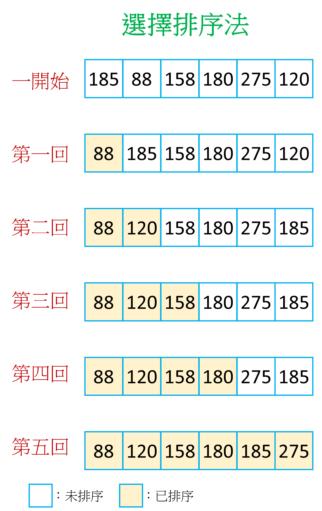

選擇排序法
〈各式各樣的排序〉第二回
不知不覺間，外頭的太陽早已消失，時間已經來到晚上8點。MY老師好不容易處理完學生們的成績與排名的事情，走出學校大門，他覺得今天很值得去吃一頓豐盛的晚餐來犒賞自己。滑著手機看看有沒有什麼好吃的餐廳，突然MY老師發現心心念念的海底撈竟然還有位置！急急忙忙的線上訂位，竟然真的成功了！幸福來的太突然，就在恍恍惚惚之間，自己已經坐在海底撈的餐桌前。看著菜單上琳瑯滿目的餐點，他突然意識到；「糟糕！自己身上只有500塊！」看來，只好使用「選擇排序法」來點自己想吃的餐點中最便宜的前3個了。
選擇排序法
首先先列出想要吃的餐點價格。這次想要吃的東西有撈派嫩羊肉185元、撈派撈麵88元、撈派黃喉158元、花枝漿180元、伊比利豬肉275元還有脆骨鮮肉丸120元。列出如下的序列：
[185, 88, 158, 180, 275, 120]
進行選擇排序法的方式就是在每一回合中，遍歷所有還沒有排序過的序列，找出其中的最大(或最小)值，回合結束之後把找到的值放到未排序的序列中的第一個位置，並且標示成已排序，然後不斷重複這個過程。

在第一回合中，我們先假設最小值為185(未排序的序列中的第一個值)，接著一個個看序列中有沒有其他值小於185。整個序列遍歷之後，可以確定最小值是88，於是我們把88跟185的位置交換，得到圖中第一回之後的序列。
[88, 185, 158, 180, 275, 120]
到了第二回合，也是一樣先假設未排序序列中的第一個值185為最小值，然後去跟後面的每一個值比較，整個比完之後，發現最小值是120，於是把120跟185交換位置，得到圖中第二回之後的序列。
[88, 120, 158, 180, 275, 185]
來到了第三回合，一樣假設158是當前未排序序列中的最小值。經過比較之後，發現這次的假設沒錯，不需要跟誰交換位置，於是就直接把158標示成「已排序」，得到的序列如下：
[88, 120, 158, 180, 275, 185]
第四回合也跟上一回合一樣，假設180是最小值，而結果也符合假設，所以序列並沒有做位置上的更動。
最後一回合，假設275是當前的最小值，之後可以發現185比275還要小，兩者交換之後，整個排序就完成啦！
小結
選擇排序法的核心思想就是在每一回合中「不斷在尚未排序的序列中找出最大(或最小)值」，接著放到整個未排序序列的第一位。若總共有n個值要排序，那總共需要進行n-1回合，第i回合需要比較(n-i)次(跟氣泡排序法一樣)，所以總共需要比較(n-1)+(n-2)+…+2+1=n(n-1)/2次，時間複雜度是O(n2)。如同上一篇提到的氣泡排序法，在n很大時就不太適合使用。
MY老師看著依照價格排序好的餐點，計算了一下前三個餐點的總價剛好小於500塊，於是準備開心點餐，卻在瞬間一陣不詳的念頭閃過：「啊！忘記還要加火鍋湯底的錢了…」，於是只好默默的起身離開海底撈去找家路邊攤解決這一餐了(#｀-_ゝ-)

國立交通大學材料系奈米科技碩士班畢業(現在應該稱國立陽明交通大學ʕ •ᴥ•ʔ)。雖然非資工相關科系畢業，但本著對資工領域的興趣而開始自學相關知識，目前則專攻網頁相關知識，如HTML5、CSS3、JavaScript、Node.js。以跨領域學習者的角度來介紹資工領域相關的知識，除了加深自己對相關知識的理解，也期望同是跨領域學習的朋友們因為瀏覽我的文章而有更多不一樣的觀點可以參考。